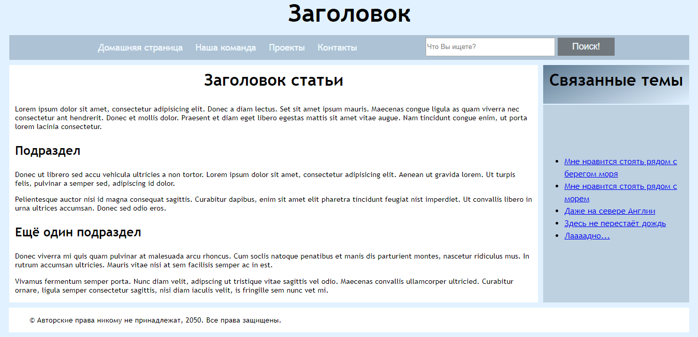

Основные составляющие документа
Веб-страницы отличаются друг от друга, но почти все они, состоят из стандартных компонентов, если только страница не отображает полноэкранное видео или игру, не является частью какого-либо художественного проекта или просто плохо структурирована:Заголовок (колонтитул): <header>
Обычно это большая полоса вверху страницы, с крупным заголовком и / или логотипом. Здесь указывается общая информация о веб-сайте, не меняющаяся от страницы к странице.
Навигационное меню: <nav>
Ссылки на основные разделы сайта; обычно в виде кнопок, ссылок или вкладок. Также как и заголовок, навигация остается неизменной на всех страницах сайта. Многие веб-дизайнеры считают панель навигации частью заголовка, а не отдельным компонентом, но это не является обязательным требованием; на самом деле, некоторые также утверждают, что их разделение на отдельные компоненты улучшает доступность, поскольку раздельная структура будет понятнее для людей, пользующихся считывателями экрана.
Основное содержимое: <main>, содержит подразделы - элементы <article>, <section> и <div>
Предназначен для содержимого, уникального для этой страницы. Используйте <main> только один раз на странице и размещайте прямо внутри тега body. В идеале он не должен быть вложен в другие элементы.
Это большая область в центре страницы, содержащая, в основном, уникальный контент данной веб-страницы, например видео, которое вы хотите посмотреть, или рассказ, который вы читаете, или карту, которую вы хотите просмотреть, или заголовки новостей и т. д. Это одна из частей сайта, которая у каждой страницы своя.
<article> окружает блок связанного содержимого, который имеет смысл сам по себе без остальной части страницы (например, один пост в блоге). <section> подобен <article>, но больше подходит для группирования одной части страницы, которая представляет собой одну часть функциональности (например, мини-карту или набор заголовков статей и сводок). Считается хорошей практикой начинать каждый раздел с заголовка. Также обратите внимание, что в зависимости от контекста вы можете разбить <article> на несколько <section> или, наоборот, <section> на несколько <article>.
Боковая панель: <aside>, обычно располагается внутри <main>.
Как правило, содержит некоторую второстепенную информацию, ссылки, цитаты, рекламу и т.д. Обычно она относится к содержимому в основном контенте (например, на странице со статьей, боковая панель может содержать биографию автора или ссылки на связанные статьи), но в некоторых случаях здесь размещают и другие элементы, например, вторичную навигационную систему.
Нижний колонтитул (футер): <footer>
Полоса в нижней части страницы, которая обычно содержит уведомления об авторских правах или контактную информацию. Это место для размещения общей информации, обычно эта информация не является критичной или вторична для самого веб-сайта. Нижний колонтитул также иногда используется для SEO целей, предоставляя ссылки для быстрого доступа к популярному контенту.

Строчные и блочные элементы
Элементы HTML являются обычно "строчными" или "блочными". Строчный элемент занимает только пространство, ограниченное тегами, которые его определяют. Блочный элемент занимает все пространство своего родительского элемента (контейнера), тем самым создавая "блок".
Иногда Вам просто нужно будет сгруппировать несколько элементов вместе, чтобы применить к ним, как к единой сущности, CSS или JavaScript. Для таких случаев в HTML есть элементы <div> и <span>.
<div> — это блочный несемантический элемент
<span> — это строчный несемантический элемент
И еще два элемента, которые Вы будете периодически использовать: <br> и <hr>
Первый создает разрыв строки в абзаце
Второй создает горизонтальный разделитель